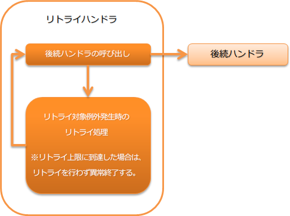

6.6.3. リトライハンドラ¶
本ハンドラはデータベースアクセス時のデッドロックのように、単純リトライによってリカバリ可能なエラーについて、自動的なリトライを制御する。
本ハンドラでは、 Retryable を実装した実行時例外をリトライ可能なエラーとみなし、後続ハンドラを再実行する。 なお、リトライ上限の判定に関する処理は、 RetryContext の実装クラスとして外部化されている。デフォルトでは以下の実装が提供されている。
本ハンドラでは、以下の処理を行う。
- リトライ対象例外発生時のリトライ処理
- リトライ上限到達時の例外送出処理
処理の流れは以下のとおり。
{kind=link}
6.6.3.2. モジュール一覧¶
<dependency>
<groupId>com.nablarch.framework</groupId>
<artifactId>nablarch-fw-standalone</artifactId>
</dependency>
6.6.3.3. 制約¶
リトライ対象例外を送出するハンドラは、本ハンドラより後ろに設定すること。 本ハンドラより手前でリトライ対象の例外を送出しても、単に例外として処理されるので注意すること。
6.6.3.4. リトライの上限を設定する¶
本ハンドラでは、リトライを無限に繰り返すのではなく一定の回数リトライを繰り返しても処理が成功しなかった場合は、 リトライに失敗したとみなし処理を異常終了させる。 このため、本ハンドラを使用する際には必ずリトライ上限の設定が必要となる。
上限設定は、上述したとおり以下の2種類から選択できる。プロジェクト要件とマッチしない場合には、プロジェクト側で実装を追加し対応すること。
以下にリトライ回数による上限設定の例を示す。
<component name="retryHandler" class="nablarch.fw.handler.RetryHandler">
<property name="retryContextFactory">
<component class="nablarch.fw.handler.retry.CountingRetryContextFactory">
<property name="retryCount" value="3" /> <!-- 最大3回リトライを行う -->
<property name="retryIntervals" value="5000" /> <!-- リトライを実行するまで5秒待機する -->
</component>
</property>
</component>
補足
上限に設定する値は、想定する最大の復旧時間プラスアルファの値を設定すること。
例えば、アクティブ/スタンバイ構成のデータベースの切り替えに最大5分かかるのであれば、 5分プラスアルファの時間(例えば7分等)を上限値として設定する。
なお、複数の例外に対するリトライを実現する場合には、最も復旧まで時間をようするものをベースに上限値を設定すること。